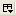

Peercast Radio
概要
Peercast の視聴を補助します。
簡単な使い方
- Peercast の環境を用意して、インターネットに 7144 ポートをオープンします。
- 視聴用のプレイヤーソフト(Windows Media Player, VLC Media Player 等)を用意します。
- Peercast Radio の「外部プレイヤー設定」でプレイヤーソフトを指定します。
- 「チャンネル読込」ボタンを押して、イエローページからチャンネル一覧を取得します。
- チャンネル一覧から視聴したいチャンネルを選択します。
- 「視聴」ボタンを押して、視聴を開始します。
画面インタフェース
- Firefox ツールバー
- 「表示」-「ツールバー」-「カスタマイズ」で、Peercast Radio 起動用のアイコンをツールバーに配置できます
- Peercast Radio アドオンツールバー
- 検索ボックス: チャンネル名または概要にキーワードを含むチャンネルに絞り込みます
- 視聴ボタン(有効状態/無効状態): 選択したチャンネルのストリーム URL を外部プレイヤーで開きます
- 掲示板ボタン(有効状態/無効状態): 選択したチャンネルのコンタクト URL をブラウザで開きます
- チャンネル読込ボタン: チャンネル一覧を再読込します(ドロップダウンリストで有効にするチャンネルを選択できます)
- フィルタボタン: フィルタの有効/無効を切り替えます(ドロップダウンリストで有効にするフィルタを選択できます)
- Peercast 設定ボタン: 利用中の peercast サーバの URL をブラウザで開きます
- 環境設定ボタン: 各種環境設定、チャンネル情報パネル、本アドオンの情報等を表示します
- チャンネル一覧
- チャンネル名、概要、視聴者数、時間、ビットレート、形式を表示します
- 項目名をクリックすることで昇順/降順を切り替えられます
- チャンネル一覧に表示する項目を追加/削除するには、チャンネル一覧の右上隅にある「表示項目の選択

」ボタンをクリックします
- チャンネル一覧のコンテキストメニュー(右クリックメニュー)
- 「視聴」: 選択したチャンネルの視聴を開始します
- 「掲示板」: 選択したチャンネルのコンタクト URL をブラウザで開きます
- 「お気に入りに追加」: チャンネル名をお気に入りに追加します
- 「お気に入りから削除」: チャンネル名をお気に入りから削除します
- 「チャンネル名をWeb検索」: 「チャンネル名」+「peercast」をキーワードにして既定の検索エンジンで検索します
- チャンネル情報パネル
- 選択したチャンネルの情報を表示します
- 視聴の可否、掲示板の利用可否、お気に入り登録済みを右上にアイコンで表示します
注意事項
- 前提環境について
- Peercast を起動していないと、イエローページからのチャンネル一覧の取得および視聴ができません
「Peercast 設定」ボタンで Peercast が起動しているか確認できます。
「全般設定」で Peercast を自動起動することもできますが、OS で自動起動するように設定した方がよいでしょう。 - ポートをオープンしていないとイエローページからチャンネル一覧を取得できません
- Peercast のポート番号を変更した場合は「ネットワーク設定」でポート番号を変更する必要があります
- Peercast を起動していないと、イエローページからのチャンネル一覧の取得および視聴ができません
- お気に入りについて
- お気に入りに追加したチャンネル名の左にはお気に入りアイコンが表示されます
- お気に入りのチャンネルはコンテキストメニューまたは「フィルタ設定」から追加/削除できます
- お気に入りのチャンネルの配信開始を通知するには、「全般設定」で「自動更新時にお気に入りのチャンネルの配信開始を通知する」をチェックします
- フィルタについて
- フィルタの条件で「が次に含まれる」を選択する場合、値に指定する項目間は「|」で区切ります
- フィルタ間は OR 条件で結合されます
- フィルタ名「お気に入り」は削除できません
- 外部プレイヤー設定について
- Windows で OGG 形式を視聴するには、VLC Media Player 等のプレイヤーが必要です
- Linux で WMV/WMA 形式を再生するには、「mms: の代わりにmmsh: を使用する」をチェックした方がよいかもしれません
- その他
- 表示する項目の幅は右側にある項目から順番に揃えると揃えやすいです
- 視聴中の yp.peercast.og のチャンネルのコンタクト URL を開くには、「Peercast 設定」ボタンを押して、リレーから「URL」を開きます
- Stylish を使うとサイドバーのスタイルを!important 指定で上書きできます
- アドオンの設定を初期化するには、Firefox の「about:config」を「peercast-radio」でフィルタして、すべての項目の「状態」を「初期設定値」にリセットします
- チェンジログ&バックログ